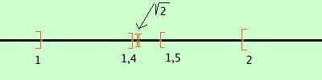

Mostriamo che i due insiemi di numeri
| prima classe |
seconda classe |
2
2,9
2,99
2,999
2,9999
2,99999
............
|
4
3,1
3,01
3,001
3,0001
3,00001
............
|

formano due classi contigue di numeri razionali:
- sono separate
ogni numero della prima classe e' piu' piccolo di 3
ogni numero della seconda classe e' piu' grande di 3
- godono dell'avvicinamento indefinito
scelgo un numero piccolissimo ad esempio 0,000001 (un milionesimo): posso prendere un numero nella prima classe ed un numero della seconda classe tali che la differenza sia ancora piu' piccola
basta prendere due numeri con piu' di 6 cifre decimali, ad esempio prendo quelli con 7 cifre decimali
2,9999999
3,0000001
la loro diffferenza vale
3,0000001 - 2,9999999 = 0,0000002
cioe' due decimilionesimi che e' meno di un milionesimo
Mostriamo che i due insiemi di numeri
| prima classe |
seconda classe |
1
1,4
1,41
1,414
1,4142
1,41421
1,414213
1,4142135
1,41421356
1,414213562
1,4142135623
.............
|
2
1,5
1,42
1,415
1,4143
1,41422
1,414214
1,4142136
1,41421357
1,414213563
1,4142135624
............
|

formano due classi contigue di numeri razionali:
- sono separate
ogni numero della prima classe e' piu' piccolo di  2 2
ogni numero della seconda clase e' piu' grande di 2
- godono dell'avvicinamento indefinito
scelgo un numero piccolissimo ad esempio 0,000001 (un milionesimo): posso prendere un numero nella prima classe ed un numero della seconda classe tali che la differenza sia ancora piu' piccola
basta prendere due numeri con piu' di 6 cifre decimali, questa volta prendo quelli con 9 cifre decimali
1,414213562
1,414213563
la loro diffferenza vale
1,414213563 - 1,414213562 = 0,000000001
cioe' un miliardesimo che e' meno di un milionesimo
|